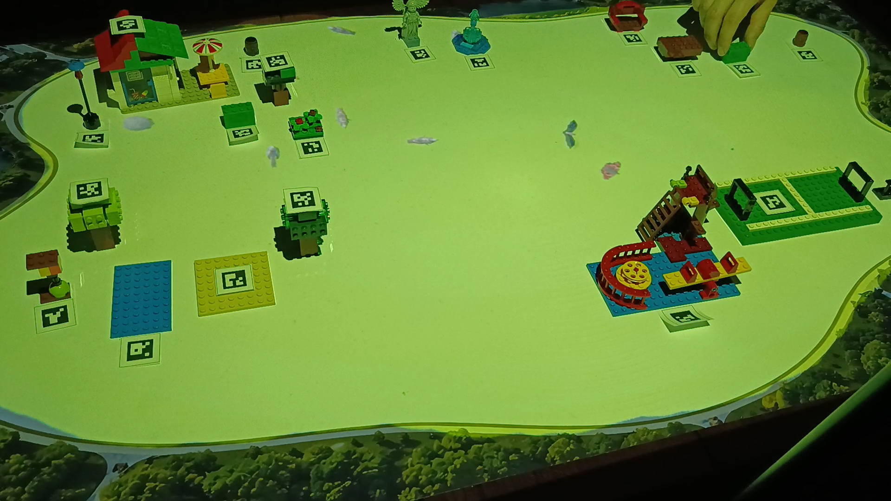
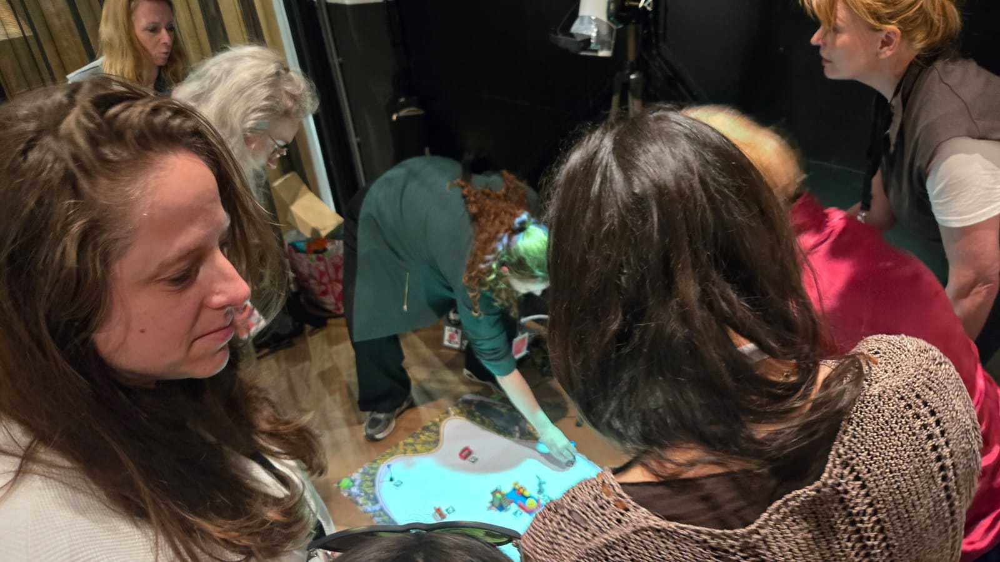
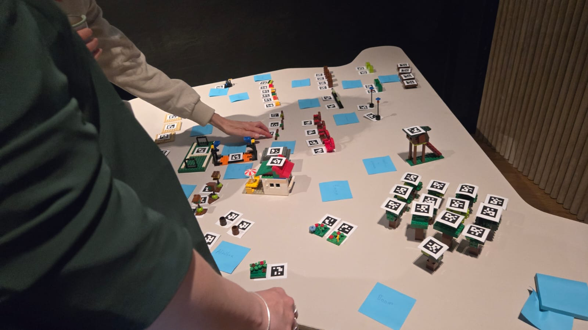
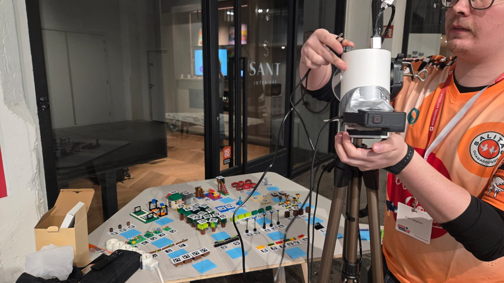
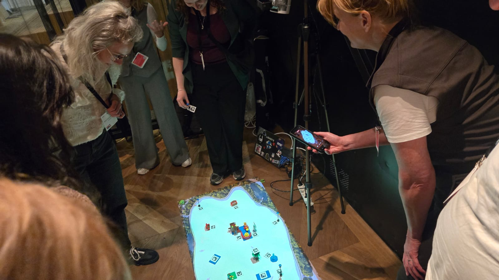
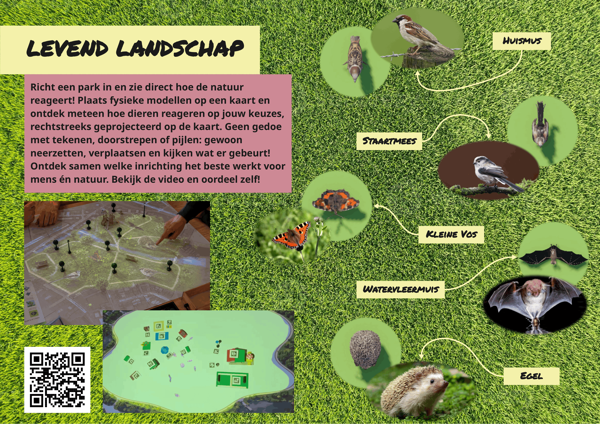

Levend Landschap
Levend Landschap is an interactive co-creation tool that lets participants design a park and immediately see how nature responds to their choices. By placing physical models on a map, participants can shape the layout of a park while simulated animals react to the changes in real time. Their responses are projected directly onto the physical map, making the ecological consequences of design choices visible and tangible. This allows participants to explore together which park layouts work best for both people and nature.






Project Context
For my graduation project at Hogeschool Rotterdam, I worked with Wijk als Biotoop, a research project by the Kenniscentrum Creating 010 focused on exploring new ways of involving non-human actors in the development of urban areas. My research focused on the question: How can technology be used to represent non-human actors in participatory co-creation processes at neighbourhood level?
As part of my graduation internship, I researched how technology could give non-human actors a more active and visible role in participatory design processes. The result was Levend Landschap, a hybrid physical-digital prototype designed to make the ecological consequences of design choices directly visible during co-creation sessions.
My Role
I was responisble for the entire development of Levend Landschap, from research and concept development to prototyping and user testing.
I conducted desk research, field research and interviews to investigate how non-human actors could be represented within participatory co-creation. Based on these findings, I developed the concept and designed and built the prototype. I developed the physical-digital interaction using Python, OpenCV, UDP and Unity, including the computer vision system for recognising physical objects and the digital simulation of animal behaviour.
I also conducted user tests and gathered feedback from participants and professionals to evaluate and improve the prototype. This included presenting and testing the prototype during a professional workshop at Smart & Social Fest.